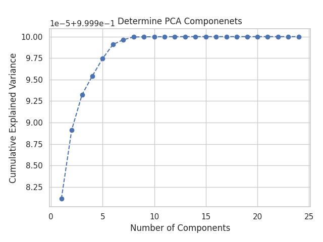

Principal Component Analysis (PCA)
When to use PCA, how to choose the number of components, how to read explained variance, and how PCA compares with kernel PCA.
Table of Content
How to decide whether to use PCA or not?
Deciding whether to use Principal Component Analysis (PCA) for dimensionality reduction depends on your specific dataset, objectives, and constraints. Here are some factors to consider when deciding whether or not to apply PCA:
| Factor | Description |
|---|---|
| High Dimensionality | PCA is particularly useful when dealing with datasets with a high number of features (variables).</br> If you have many features, PCA can help reduce dimensionality and simplify your analysis. |
| Correlated Features | PCA works well when there is multicollinearity or high correlation among features.</br> It can help in decorrelating the features, making them more orthogonal and easier to interpret. |
| Noise Reduction | PCA can be used to reduce the impact of noisy or less informative features.</br> By focusing on the principal components with the most variance, you can retain the most important information while removing noise. |
| Visualization | If you plan to visualize your data in two or three dimensions, PCA can be a useful tool to project high-dimensional data onto a lower-dimensional space while preserving the most important variation. |
| Model Complexity | In some cases, high dimensionality can lead to overfitting in machine learning models.</br> Reducing dimensionality with PCA can mitigate this issue. |
| Interpretability | PCA can make your data more interpretable by reducing it to a smaller set of uncorrelated variables (principal components) that often have meaningful interpretations. |
| Computation Time | High dimensionality can significantly increase computation time for some algorithms.</br> Reducing dimensionality with PCA can speed up analysis and modeling. |
However, there are also considerations against using PCA
| Consideration | Reason Descirption |
|---|---|
| Loss of Information | PCA reduces dimensionality by projecting the data onto a lower-dimensional space, potentially leading to a loss of information.</br> You should carefully consider how much variance you are willing to sacrifice when selecting the number of principal components to retain. |
| Interpretability | While PCA can make data more interpretable in some cases, the transformed principal components may not have a direct physical or business interpretation. |
| Business Context | Consider whether reducing dimensionality aligns with your specific business objectives.</br> In some cases, retaining all features may be necessary to capture domain-specific knowledge. |
| Loss of Feature Meaning | PCA transforms the original features into linear combinations of them. If preserving the meaning of individual features is crucial, PCA may not be suitable. |
| Algorithm Compatibility | Some machine learning algorithms may perform well on high-dimensional data without dimensionality reduction.</br> It's essential to evaluate whether your chosen algorithms can handle high-dimensional data efficiently. |
In practice, it's often a good idea to try both with and without PCA and compare the results. You can measure the explained variance ratio to understand how much information is retained by each principal component. The decision to use PCA should be driven by your specific problem, data characteristics, and the goals of your analysis or modeling.
Should we split the data before appyling PCA?
The decision of whether to split your data into training and testing sets before applying Principal Component Analysis (PCA) depends on your specific objectives and the context of your analysis. Here are some considerations to help you decide:
| Factor | Description |
|---|---|
| PCA as a Data Preprocessing Step | If your primary goal for PCA is dimensionality reduction and feature engineering, and you intend to use the reduced-dimensional data in downstream tasks such as clustering, regression, or classification, you can perform PCA on the entire dataset without splitting it. In this case, PCA serves as a preprocessing step. |
| Evaluation of PCA Results | If you want to evaluate the impact of PCA on the performance of a machine learning model or assess how well it preserves the information in your data, you may want to split your data into training and testing sets. You can then apply PCA to the training set, transform both the training and testing sets using the PCA model, and train/test your model with the transformed data. |
| Avoid Data Leakage | Splitting the data can help you avoid data leakage. If you apply PCA to the entire dataset and then split it, information from the testing set may unintentionally influence the PCA transformation. This can lead to overly optimistic performance estimates. |
| Cross-Validation | In more advanced scenarios, you might want to use techniques like k-fold cross-validation in combination with PCA. In each fold of the cross-validation, you apply PCA to the training data and evaluate the model's performance on the validation set. This approach helps assess the robustness of PCA and model performance across different subsets of the data. |
In summary, whether you split the data before PCA depends on your goals and the context of your analysis. If you're using PCA for data preprocessing and feature engineering, you can apply it to the entire dataset. However, if you want to evaluate the impact of PCA on model performance or avoid data leakage, it's advisable to split the data into training and testing sets before applying PCA.
Choosing the Number of PCA Components
Choosing the number of principal components (n_components) for PCA is an important decision and requires some understanding and consideration. There is no one-size-fits-all answer, and the choice depends on your specific goals and the characteristics of your data. Here are some common approaches to help you decide on the number of components:
| Factor | Descriptio |
|---|---|
| Explained Variance | One of the most common methods is to examine the explained variance ratio for each principal component. This ratio tells you the proportion of variance in the data that is explained by each component.</br>Plot a cumulative explained variance curve and look for an "elbow" point where adding more components does not significantly increase the explained variance. The number of components at the elbow point can be a reasonable choice. |
| Desired Explained Variance | Alternatively, you can set a specific threshold for the explained variance (e.g., 95%) that you want to retain. Then, choose the number of components that achieve or exceed this threshold.</br>This approach allows you to retain a certain amount of information in your data while reducing dimensionality. |
| Cross-Validation | If you plan to use PCA as a preprocessing step for a downstream machine learning task (e.g., classification or regression), you can use cross-validation to determine the optimal number of components. </br>This helps assess how well different numbers of components impact your model's performance. |
| Business or Domain Knowledge | Sometimes, domain knowledge can guide your choice of n_components. For example, in image analysis, you might know that certain features are important, so you include enough components to capture those features. |
| Trial and Error | You can experiment with different values of n_components and evaluate the impact on your specific analysis or modeling task. This can involve assessing model performance, visualization, or interpretability. |
| Incremental PCA (IPCA) | If memory constraints are an issue, you can consider using Incremental PCA, which allows you to perform PCA on subsets of your data.</br> This can be useful for large datasets that don't fit into memory. |

In practice, it's often a combination of these methods, and the final choice may involve some trade-offs between dimensionality reduction and information retention. It's a good practice to document your decision-making process and, if applicable, report the number of components chosen and the rationale behind it in your analysis or project documentation.
PCA - Explained Variance
In Principal Component Analysis (PCA), the "explained variance" refers to the proportion of the total variance in the original dataset that is explained by each principal component. It quantifies how much information or variability is captured by each component.
Here's a more detailed explanation:
| Detail | Description |
|---|---|
| Variance in Data | Variance measures the spread or dispersion of data points around the mean. In a dataset, each feature contributes to the overall variance, and the total variance is the sum of variances across all features. |
| Principal Components | PCA is a dimensionality reduction technique that transforms the original features into a new set of orthogonal (uncorrelated) features called principal components. These components are linear combinations of the original features. |
| Explained Variance per Component | When you perform PCA, the principal components are ordered by the amount of variance they explain. The first principal component (PC1) explains the most variance, the second principal component (PC2) explains the second most, and so on. |
| Explained Variance Ratio | The explained variance ratio is the proportion of the total variance in the data that is explained by each principal component. It is computed as the variance of that component divided by the total variance. Mathematically, for the i-th principal component: |
| Equation | Explained Variance Ratio (EV_i) = Variance of PC_i / Total Variance |
| Cumulative Explained Variance | You can calculate the cumulative explained variance by summing the explained variance ratios of the components in order of importance. This helps you understand how much of the total variance is explained as you include more components. |
| Interpretation | High explained variance ratios indicate that a principal component retains a significant amount of information from the original data. Conversely, low explained variance ratios suggest that the component captures less of the original data's variability. |
The choice of how many principal components to retain often depends on your specific goals. If you want to reduce dimensionality while preserving most of the data's variance, you might choose to retain a sufficient number of components to reach a desired cumulative explained variance threshold (e.g., 95%). Alternatively, you may analyze the significance of each component and select a smaller subset for interpretability or efficiency.
In summary, explained variance in PCA provides insights into how much information each principal component captures from the original data, making it a critical factor in dimensionality reduction and feature selection.
What does these explained_variance_ratio means?
In an example, you decide to use 6 components, and the output explained_variance_ratio were: [0.27459908 0.09744125 0.08654689 0.05797131 0.04523113 0.04380994]
The explained_variance_ratio_ values you've provided indicate the proportion of the total variance in the data that is explained by each principal component when you use n_components = 6 in your PCA analysis. Here's what you can interpret from this information:
| Interpretation | Description |
|---|---|
| Variance Explained by Each Component | Each value in the explained_variance_ratio_ array represents the proportion of variance explained by one of the six principal components. For example:</br>- The first principal component (PC1) explains approximately 27.46% of the total variance.</br>- The second principal component (PC2) explains approximately 9.74% of the total variance.</br>- The third principal component (PC3) explains approximately 8.65% of the total variance.</br>- And so on for the remaining components. |
| Cumulative Explained Variance | You can also calculate the cumulative explained variance by summing the explained variance ratios cumulatively.</br>This is useful for understanding how much of the total variance is explained as you include more principal components. For example:</br>- PC1 explains 27.46% of the variance.</br>- PC1 + PC2 explains 27.46% + 9.74% = 37.20% of the variance.</br>- PC1 + PC2 + PC3 explains 27.46% + 9.74% + 8.65% = 45.85% of the variance.</br>- And so on for all six components. |
| Dimensionality Reduction | These values help you decide how many principal components to retain. For instance, if your goal is to reduce dimensionality while preserving a certain amount of variance, you might choose to retain enough components to achieve, say, 95% of the cumulative explained variance. |
| Interpretation | You can also analyze the interpretation of each component based on the original features to understand what aspects of the data each component captures. Higher explained variance suggests that a component retains more information from the original data. |
In your specific case, if you choose to retain six components, you would retain a total of approximately 97.69% of the total variance in the data. This means that you are preserving a substantial portion of the data's information while reducing its dimensionality. However, the choice of how many components to retain ultimately depends on your specific objectives and trade-offs between dimensionality reduction and information retention.
Are These Explained-Variance Values 'Good' or 'Bad'?
Whether the explained variance values in PCA are considered "good" or "bad" depends on your specific goals and the context of your analysis. There is no universal threshold that defines what is good or bad because it varies based on your objectives. Here's how to interpret the values:
| Value | Interpretation |
|---|---|
| High Explained Variance Values | High values indicate that a principal component captures a significant amount of information from the original data.</br>This can be considered "good" if your goal is dimensionality reduction while preserving as much information as possible.</br>High explained variance values suggest that the component retains the underlying structure of the data well. |
| Low Explained Variance Values | Low values indicate that a principal component captures less information from the original data.</br>This can be considered "bad" if you aim to retain most of the original data's information.</br>Low explained variance values suggest that the component may not be informative and could be discarded. |
| Cumulative Explained Variance | Evaluating the cumulative explained variance is often more informative than looking at individual component values.</br>A high cumulative explained variance (e.g., close to 100%) is generally desirable if you want to retain most of the data's information.</br>Depending on your use case, you may consider different thresholds for the cumulative explained variance (e.g., 95%) to strike a balance between dimensionality reduction and information retention. |
In practice, you should consider your specific objectives when evaluating the explained variance values:
- If you are performing dimensionality reduction for a machine learning task, you might aim to retain a sufficient portion of the variance (e.g., 95%) to ensure your model performs well while reducing the dimensionality.
- If your goal is exploratory data analysis or data visualization, you might choose to retain a smaller number of components that capture the most important patterns in the data.
- If you are conducting feature engineering, you may use PCA to identify the most relevant features based on their contributions to the explained variance.
Ultimately, the "goodness" of explained variance values depends on how well they align with your specific analytical goals and constraints.
PCA Vs KPCA
PCA is a linear dimensionality reduction technique, meaning that it finds linear combinations of the original features to create new features.
Kernel Principal Component Analysis (KPCA) is a non-linear extension of PCA. It works by using a kernel function to transform the data into a higher-dimensional space, where PCA is then performed. This allows KPCA to find non-linear relationships in the data.
Comparison
Comparison of PCA and KPCA:
| Characteristic | PCA | KPCA |
|---|---|---|
| Linearity | Linear | Non-linear |
| Dimensionality | Reduces dimensionality by finding linear combinations of the original features | Reduces dimensionality by finding non-linear combinations of the original features |
| Computational complexity | Lower | Higher |
| Performance on non-linear data | Poor | Good |
| Advantages | Simple to implement and understand.</br>Fast and efficient.</br>Interpretable results. | Can capture non-linear relationships in the data.</br>More robust to outliers than PCA |
| Disadvantages | Cannot capture non-linear relationships in the data.</br>Sensitive to outliers | More computationally expensive than PCA.</br>Results can be more difficult to interpret |
Which one to use?
If your data is linear or you need a fast and efficient dimensionality reduction technique, then PCA is a good choice. However, if your data is non-linear or you need a technique that is robust to outliers, then KPCA is a better option.
Usage Examples
Here are some examples of when to use PCA and KPCA:
PCA:
- Image processing: To reduce the dimensionality of images before performing other tasks such as classification or segmentation.
- Natural language processing: To reduce the dimensionality of text data before performing other tasks such as topic modeling or sentiment analysis.
- Financial data analysis: To reduce the dimensionality of financial data before performing other tasks such as risk assessment or portfolio optimization.
KPCA:
- Image recognition: To recognize objects in images that may appear in different orientations or under different lighting conditions.
- Handwriting recognition: To recognize handwritten characters that may vary in shape and size.
- Speech recognition: To recognize spoken words that may vary in pronunciation and intonation.
Overall, PCA and KPCA are both powerful dimensionality reduction techniques. The best one to use will depend on the specific characteristics of your data and your needs.